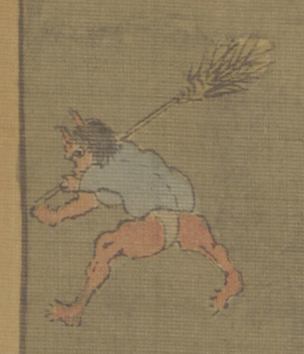

← 图鉴索引

箒を持って逃げる赤鬼。青い上着に、白のふんどしを締めている。
著作者：専斎／出典：親書誌：U426_nichibunken_0274：御正月；オショウガツ／日付：2014／資源識別子：U426_nichibunken_0274_0001_0000
Copyright (c)2010- International Research Center for Japanese Studies, Kyoto, Japan. All rights reserved.